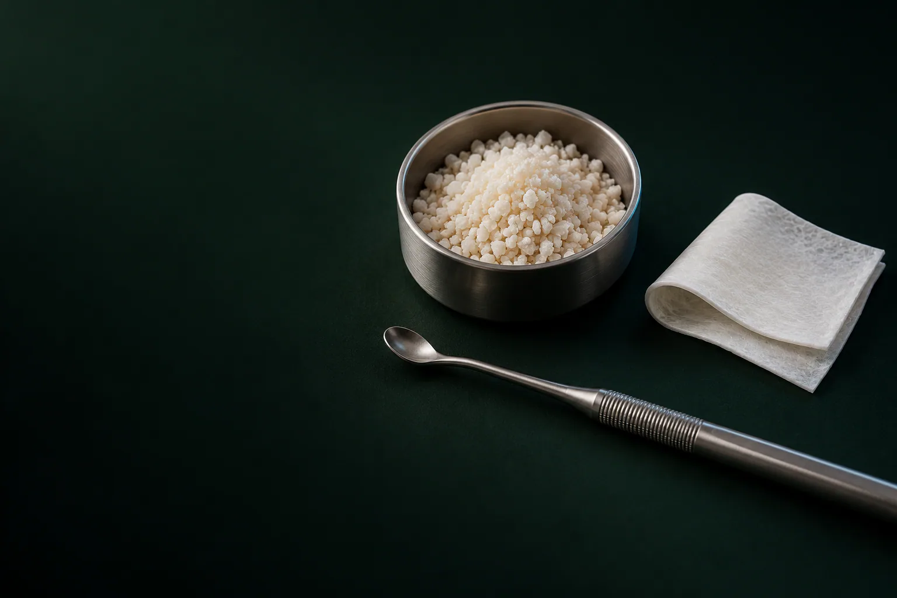

Консультация и КТ
Хирург-имплантолог осматривает полость рта и направляет на КТ зубов и челюстей. По снимку видно объём кости, положение пазухи и нерва.

Костная пластика при имплантации, это наращивание костной ткани для имплантов: операция восстанавливает ширину и высоту кости челюсти, если её не хватает для импланта нужного размера (чаще всего после давнего удаления зуба).
Имеются противопоказания. Необходима консультация специалиста.
В клинике «Умная Медицина. Стоматология» в пос. Удельная (Раменский округ) пластика блоками стоит от 55 000 ₽, подсадка материала Bio-Oss: от 19 700 ₽ за 0,25 г. Лечение начинаем с КТ и 3D-плана.
Имеются противопоказания. Необходима консультация специалиста.
Это хирургическое вмешательство, которое восстанавливает ширину и высоту кости альвеолярного отростка, то есть той части челюсти, в которой держатся зубы. Другие названия: остеопластика и костная аугментация, а в медицинских документах, аугментация альвеолярного отростка.
Зачем это нужно. Имплант должен со всех сторон находиться в кости. Если кость узкая или низкая, хирургу приходится выбирать имплант меньше нужного или ставить его под неудачным углом: тогда хуже распределяется жевательная нагрузка, а контур десны над будущей коронкой может просесть. Пластика возвращает объём, при котором имплант нужного размера можно поставить в правильное положение и надёжно закрепить. Дальше по обычному плану проходит имплантация зубов.
Почему кости становится меньше. Кость челюсти сохраняет объём, пока получает нагрузку от корня зуба. Когда зуб удалён, нагрузки нет, и кость постепенно рассасывается: и в ширину, и в высоту. Ускоряют убыль кости пародонтит, травмы, кисты и многолетнее ношение съёмного протеза, который давит на десну. Поэтому пластика чаще нужна тем, кто долго откладывал имплантацию.
Объём вмешательства бывает разным: от небольшой подсадки материала у одного импланта до восстановления кости на месте нескольких отсутствующих зубов. Сюда же относят большие реконструкции челюстно-лицевой области после травм и удаления опухолей, но их выполняют челюстно-лицевые хирурги в стационаре. В стоматологической клинике задача другая: подготовить кость под импланты.
Операцию нередко называют наращиванием десны. На деле восстанавливают кость, которая лежит под десной, а десна закрывает её сверху. Когда кость возвращается на место, контур десны над ней тоже выравнивается: поэтому в быту и говорят о восстановлении десны.
Если не хватает именно мягких тканей: толщины или высоты десны, их восполняют другой операцией, пластикой десны. Сами зубы при этом не наращивают: восстанавливают кость под будущие зубы на имплантах.
Решение принимает хирург-имплантолог по КТ: на снимке видно, сколько кости есть в месте будущего импланта и где проходят важные анатомические структуры. Кость должна окружать имплант со всех сторон, поэтому пластику планируют, если:
Чем раньше запланирована имплантация, тем меньше обычно объём пластики. Поэтому восстановление зуба лучше обсудить с хирургом сразу после удаления, а то и до него.
При этом пластика нужна не всем: если кости достаточно, её просто не делают.
Да, если кости хватает. Тогда дополнительная операция не нужна: хирург ставит имплант по 3D-плану и хирургическому шаблону.
При полной потере зубов на челюсти нередко помогают протоколы All-on-4 и All-on-6. Импланты располагают там, где кости больше, а задние иногда ставят под углом. Так протез на имплантах часто удаётся закрепить без пластики, но решает это хирург по КТ.
Обойтись без пластики удаётся не всегда. Если кости мало, а пластика противопоказана или вы не готовы к операции, зубы восстанавливают без вмешательства в кость: мостовидным протезом, съёмным протезом или бюгельным протезом. Но для моста обтачивают соседние зубы, а под съёмным протезом кость продолжает убывать.
Способов несколько, и универсального среди них нет. Метод хирург выбирает по КТ: насколько велик дефект, какой он формы, не хватает ширины, высоты или того и другого, и в какой зоне челюсти он находится. Ниже: методы, которые применяют в клинике.
Костный блок, фрагмент костного материала, который закрепляют на челюсти в зоне дефекта. Метод применяют при значительном дефиците ширины или высоты кости, когда одних гранул под мембраной недостаточно. Чтобы блок не смещался, используют титановые винты для фиксации костных блоков (минивинты). Промежутки вокруг блока заполняют костным материалом, при необходимости закрывают мембраной и ушивают десну.
Имплант ставят вторым этапом: после того как блок приживётся и срастётся с собственной костью; готовность проверяют на контрольном КТ. Пластика блоками стоит от 55 000 ₽, что входит в эту сумму: разобрано ниже, в разделе о цене.
Это один из распространённых способов нарастить кость. Гранулы костнозамещающего материала укладывают в зону дефекта и закрывают барьерной мембраной. Мембрана не даёт десне врастать в материал, и под ней постепенно формируется новая кость. Метод подходит при небольшом и умеренном дефиците объёма.
Материал укладывают одновременно с установкой импланта или отдельным этапом перед имплантацией: вариант хирург выбирает по КТ.
Для этого способа нужны материал и мембрана: подсадка Bio-Oss (Швейцария) стоит от 19 700 ₽ за 0,25 г, мембрана Bio-Gide, от 36 900 ₽, позиции с Биопласт-дент, от 5 850 ₽. Из чего складывается итоговая сумма, разобрано ниже, в разделе о цене.
В боковых отделах верхней челюсти над корнями зубов находится гайморова (верхнечелюстная) пазуха. После потери зубов кость под ней истончается, и для импланта не хватает высоты. Решают эту задачу так: хирург бережно приподнимает слизистую оболочку дна пазухи и заполняет пространство под ней костным материалом. Операция бывает закрытой и открытой: о показаниях, этапах и ценах читайте на странице синус-лифтинг.
Наращивание кости челюсти планируют с учётом анатомии: верхняя и нижняя челюсти устроены по-разному.
Верхняя челюсть. Кость здесь более пористая и без зубов убывает быстрее. В боковых отделах высоту ограничивает гайморова пазуха, поэтому там чаще нужен синус-лифтинг. В переднем отделе, где важна эстетика улыбки, кость наращивают блоками или гранулами материала под мембраной.
Нижняя челюсть. Кость плотнее, но внутри неё проходит нижнечелюстной канал с нервом, который отвечает за чувствительность губы и подбородка. В переднем отделе гребень после потери зубов нередко становится узким, в боковых: низким. Операцию здесь планируют так, чтобы сохранить безопасное расстояние до нерва, а метод выбирают по форме и объёму дефекта. Положение канала хирург измеряет по КТ ещё до операции.
Материалы делят на четыре группы. Любой из них служит каркасом, вдоль которого прорастает собственная кость пациента, а аутогенная кость к тому же содержит живые клетки.
| Материал | Откуда берут | Когда применяют | Особенности |
|---|---|---|---|
| Аутогенный (собственная кость) | Из другой зоны челюсти пациента, например из области подбородка или ветви нижней челюсти | Крупные дефекты, костные блоки | Содержит живые клетки и хорошо приживается; нужна дополнительная зона забора, то есть ещё одна рана |
| Аллогенный (донорский) | Донорская кость из тканевого банка после обработки и стерилизации | Блоки и гранулы при средних и крупных дефектах | Не нужна вторая операционная зона; применяют только сертифицированный материал |
| Ксеногенный (животного происхождения) | Минеральная основа кости животного, очищенная от органических компонентов, например, Bio-Oss | Подсадка под мембрану, синус-лифтинг, смесь с собственной костью | Рассасывается медленно и долго держит объём, пока формируется новая кость |
| Синтетический | Изготавливают в лаборатории, чаще на основе фосфатов кальция | Небольшие дефекты, смеси с другими материалами | Не содержит биологических тканей; свойства зависят от состава |
Мембраны. Барьерная мембрана закрывает материал и не даёт десне врастать в него. Мембрана Bio-Gide: коллагеновая, со временем рассасывается сама, отдельная операция для её удаления не нужна. В клинике используют также мембрану и крошку Биопласт-дент.
Титановые минивинты удерживают блок неподвижно, пока он приживается; как правило, их снимают при установке импланта.
В клинике работают с костнозамещающим материалом Bio-Oss (Швейцария), мембранами Bio-Gide и Биопласт-дент, крошкой Биопласт-дент и минивинтами для фиксации блоков. Какой материал подойдёт в вашем случае, хирург решит по КТ.
Ниже: цены на каждую позицию. Итоговую сумму хирург указывает в плане лечения после КТ, с разбивкой по этапам.
Цены актуальны на 17.10.2026. Цена со словом «от», минимальная стоимость позиции: с объёмом работ и материала она может вырасти.
Имеются противопоказания. Необходима консультация специалиста.
Что входит в цену. Пластика костными блоками стоит от 55 000 ₽, и в эту сумму уже включены работа врача, анестезия, костный материал и 2 минивинта. КТ, имплант и коронка оплачиваются отдельно. Цена подсадки Bio-Oss указана за 0,25 г, а сколько материала понадобится, зависит от размера дефекта. Что входит в каждый этап и итоговую сумму, врач запишет в план лечения до начала работы.
От чего зависит итоговая сумма. Её определяют метод, объём и форма дефекта, количество материала, вид мембраны, число винтов и количество зон, которые восстанавливают. Поэтому стоимость у двух пациентов с «одним зубом» может заметно различаться.
Снизить расходы помогают скидка 10% при оплате лечения в день консультации (условия подскажет администратор), рассрочка на 12 месяцев без процентов и возврат части расходов через налоговую: подробнее на странице рассрочка и налоговый вычет.
Операция амбулаторная: её проводят в клинике, и в тот же день вы уходите домой. Длительность зависит от метода и объёма пластики. Порядок лечения по шагам:
Хирург-имплантолог осматривает полость рта и направляет на КТ зубов и челюстей. По снимку видно объём кости, положение пазухи и нерва.
Хирург на компьютере планирует положение будущих имплантов и при необходимости обсуждает план на консилиуме с ортопедом. Вы получаете план с ценой по этапам.
До операции лечат больные зубы и проводят профессиональную чистку зубов, чтобы снизить риск воспаления.
Операцию проводят под местной анестезией.
Хирург делает разрез десны, готовит костное ложе, устанавливает блок и фиксирует его минивинтами или укладывает материал, при необходимости закрывает зону мембраной.
Десну ушивают, врач объясняет, как вести себя после операции, и назначает контрольные осмотры.
Материал постепенно срастается с собственной костью и частично замещается ею; готовность проверяют на контрольном снимке. Срок зависит от ситуации, точный график врач распишет в плане лечения.
Импланты ставят по хирургическому шаблону, затем ортопед изготавливает коронку на имплант или протез.
Сроки и цену каждого этапа врач распишет в плане лечения.
Записаться на консультациюЭти шаги одинаковы для любого метода, различаются материалы и сроки. Если пластику делают одновременно с имплантацией, шаги 5 и 8 объединяют в одну операцию.
Пластику и имплантацию проводят по одной из двух схем. Выбор зависит от того, сможет ли имплант с первого дня надёжно держаться в собственной кости пациента.
Одновременно. Если кости не хватает немного, имплант ставят и в ту же операцию укладывают вокруг него материал под мембрану. Тогда установка импланта с наращиванием кости проходит за одно вмешательство, а общий срок лечения обычно короче.
Поэтапно. При значительном дефиците, например при пластике блоками, сначала восстанавливают кость, а имплант ставят позже: после того, как блок прижился и это подтвердил контрольный снимок.
| Схема | Когда подходит | Сколько операций |
|---|---|---|
| Одновременно | Небольшой дефицит кости, имплант надёжно держится в своей кости | Одна: имплант и материал под мембрану |
| Поэтапно | Значительный дефицит ширины или высоты, пластика блоками | Две: сначала пластика, затем имплантация |
Какая схема подойдёт вам, хирург скажет после КТ, а точный график лечения распишет в плане. О протезировании после имплантации: на странице коронка на имплант.
Пластику не проводят или откладывают при:
Курение, относительное противопоказание: оно ухудшает кровоснабжение тканей и приживление материала, поэтому хирург попросит отказаться от сигарет до и после операции. Окончательное решение принимает врач после осмотра и обследования.
После любой операции в челюсти возможны отёк, гематома и дискомфорт: это ожидаемая реакция тканей. Реже бывают расхождение швов, воспаление, частичное рассасывание или отторжение материала, а при операции на нижней челюсти: временное онемение губы или подбородка. Риски снижают КТ перед операцией, 3D-планирование и выполнение рекомендаций после неё. Если боль не уменьшается, а нарастает, сразу свяжитесь с врачом.
Первые сутки. Прикладывайте холод к щеке с перерывами, как скажет врач. Не полощите рот, не трогайте швы языком и пальцами, не ешьте, пока не прошло действие анестезии.
Первые дни и до снятия швов:
Контрольные визиты. Врач осматривает зону операции и снимает швы в назначенный день, обычно примерно через 10 дней.
Небольшой отёк десны и щеки в первые дни: обычная реакция. Звоните врачу сразу, если боль и отёк нарастают, поднялась температура, появились гной, неприятный запах или разошлись швы.
Хирургический этап и имплантацию в клинике выполняют стоматологи-хирурги, имплантологи:
Протезирование на имплантах после пластики ведут стоматологи-ортопеды Солодухин Евгений Викторович и Алиханова Светлана Андреевна. Сложные случаи хирург и ортопед разбирают вместе на консилиуме.

Хирург, имплантолог
Имплантация, удаление зубов и подготовка к имплантации
Записаться к врачу
Хирург, имплантолог
Удаление зубов и имплантация, хирургия в сложных случаях
Записаться к врачу
Главный врач, ортопед
Протезирование и восстановление зубов, протезы на имплантах
Записаться к врачу
Ортопед
Восстановление зубов и протезирование, эстетичные коронки
Записаться к врачуОтзывы о клинике и врачах: на ПроДокторов, Яндекс Картах и 2ГИС.
Когда по КТ ширины или высоты кости не хватает, чтобы поставить имплант нужного размера в правильное положение. Чаще всего это бывает, если зуб удалён давно, после пародонтита, кисты или травмы. Решение принимает хирург-имплантолог после консультации и КТ двух челюстей (4 500 ₽).
Есть три основных способа: костные блоки с фиксацией титановыми минивинтами, подсадка костного материала (например, Bio-Oss) под мембрану и синус-лифтинг на верхней челюсти в зоне пазухи. Метод выбирает хирург по КТ: по объёму и форме дефекта.
Без нагрузки от корня кость постепенно убывает в ширину и высоту. Чем дольше нет зуба, тем чаще нужен больший объём пластики. Поэтому имплантацию лучше планировать вскоре после удаления.
При небольшом дефиците иногда можно: имплант ставят, укладывают вокруг него материал и закрывают мембраной. После пластики блоками имплант устанавливают вторым этапом, когда блок приживётся. Схему хирург определяет по КТ.
Операцию проводят под местной анестезией. После неё несколько дней возможны отёк и дискомфорт, обезболивающие назначает врач. Если боль не стихает, а нарастает, нужно сразу связаться с хирургом.
Срок зависит от объёма пластики и материала, точный график врач распишет в плане лечения. Готовность кости хирург проверяет на контрольном КТ и только после этого планирует имплантацию.
Иногда да. При полной потере зубов могут подойти протоколы All-on-4 или All-on-6, при которых пластика нередко не нужна. Другие варианты: мост, съёмный или бюгельный протез. Решение принимают по КТ.
Работа врача, анестезия, костный материал и 2 минивинта. КТ, имплант и коронка оплачиваются отдельно. Понадобятся ли дополнительно мембрана или винты, хирург скажет после КТ, и всё это будет в плане лечения с ценой до начала работы.
Врачи называют это костной пластикой, остеопластикой или аугментацией кости. Основные виды: пластика блоками, подсадка материала под мембрану (направленная регенерация) и синус-лифтинг на верхней челюсти.
Умеренный отёк в первые дни, нормальная реакция тканей на операцию, затем он постепенно спадает. Если боль и отёк нарастают, поднялась температура или появился гной, сразу свяжитесь с врачом.
Запишитесь на консультацию: план лечения с ценой по этапам
Имеются противопоказания. Необходима консультация специалиста.
Стоматология «Умная Медицина» работает в пос. Удельная: Московская обл., Раменский округ, ул. Громова, 10/2. Костную пластику и имплантацию проводят именно здесь, в Удельной; филиал сети в Быково: многопрофильный. Приехать можно из посёлков Раменского округа и из соседних городов.
Клиника находится рядом с Жуковским; по соседству: Малаховка, Быково, Ильинский, Островцы, Красково, Октябрьский и Родники. К нам приезжают и из Люберец, Раменского и Балашихи.
На машине: по Новорязанскому шоссе, у клиники есть бесплатная парковка. На электричке Казанского направления (МЦД-3): до платформы «Удельная», от неё до клиники можно дойти пешком. Из Раменского и Жуковского ходят автобусы и маршрутки № 23 и 39 до остановки «Школа гимназия №33».
Имеются противопоказания. Необходима консультация специалиста.
пгт Удельная, Раменский округ, рядом с Жуковским.
Ежедневно с 9:00 до 21:00
Перезвоним за 5 минутК нам ездят из Жуковского, Раменского, Быково, Ильинского, Красково, Малаховки, Островцов, Люберец и Балашихи.
Перезвоним за 5 минут, подберём врача и удобное время.
Оставьте номер, администратор перезвонит и ответит на вопросы.
Подойдёт КТ, панорама, прицельный снимок или фото плана лечения из другой клиники. Врач посмотрит и ответит в течение рабочего дня. Это бесплатно.
Хирург, ортопед и терапевт осмотрят вас вместе, сделаем КТ. Консультация бесплатная, если остаётесь на лечение. Стоимость лечения врач назовёт после осмотра.
Консультацию ведут вместе
ХирургМихаилОртопедЕвгений ТерапевтАртём
ТерапевтАртёмПервый визит 0 ₽, если остаётесь на лечение
Хирург, ортопед и терапевт посмотрят ваш случай вместе и предложат два-три варианта с ценой. Оставьте номер, администратор перезвонит и подберёт время.
Скидка 10% на лечение, если оплатить его в день консультации
Перезвоним за 5 минут, ежедневно с 9:00 до 21:00. Нажимая кнопку, вы соглашаетесь с обработкой персональных данных и Политикой конфиденциальности.
Администратор перезвонит за 5 минут.